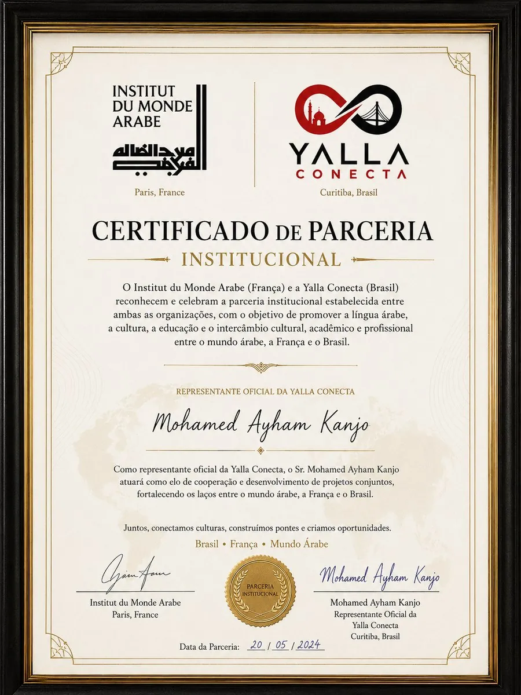

Traduzimos do árabe para o português e do português para o árabe com fé pública.
نساعدك على تحويل مستنداتك العربية إلى أوراق رسمية مقبولة في البرازيل: الإقامة، الزواج، معادلة الشهادة الجامعية، فتح شركة، السجل العدلي، ورخصة السياقة.
Preparamos a documentação exigida por consulados, ministérios e órgãos reguladores árabes.
Cada órgão exige um tipo diferente.
Feita por tradutor público matriculado na Junta Comercial.
Naturalização, casamento, revalidação de diploma, processos judiciais.
Tradução acompanhada de carta assinada atestando fidelidade ao original.
Boa opção para admissão acadêmica e processos internos.
Manuais, laudos, bulas, fichas técnicas e documentação de exportação.
Acompanhamento em cartório, reuniões, feiras e audiências.
Tradução juramentada para residência, naturalização e visto de trabalho.
Nascimento, casamento, divórcio, óbito e certidão de solteiro.
Diploma, histórico, ementas e declaração de conclusão.
Contratos sociais, procurações, escrituras e sentenças.
Laudos, prontuários, exames e carteiras de vacinação.
Habilitação, passaporte, identidade e livro de família.
Não encontrou seu documento? Envie uma foto pelo WhatsApp.
Rótulo traduzido fora da norma é carga retida.
Ingredientes, alergênicos, tabela nutricional, origem, lote e selo Halal.
Bula, posologia, contraindicações e advertências.
Composição, modo de uso, precauções e símbolos de risco.
Entregamos o texto pronto para o designer e revisamos a prova antes da impressão.
Foto ou PDF pelo WhatsApp.
Dizemos qual tipo de tradução o órgão aceita.
Valor fechado antes de começar.
Tradução com assinatura e selo, revisada integralmente.
PDF assinado digitalmente e via física pelo correio.
Se o órgão pedir ajuste, a gente resolve.
Sírio, tradutor de árabe e português, professor de língua árabe e pesquisador.
Árabe padrão e dialetos do Levante, Egito e Golfo.
Professor de árabe e pesquisador de tradução.

Qual tipo cada órgão aceita.
A ordem certa evita refazer tudo.
Documentos, prazos e caminho.
Diferenças de formato e exigências.
Documentos, CPF, visto e Junta Comercial.
Como conferir matrícula e selo.
Resposta com tipo de tradução, prazo e valor.
Falar no WhatsApp